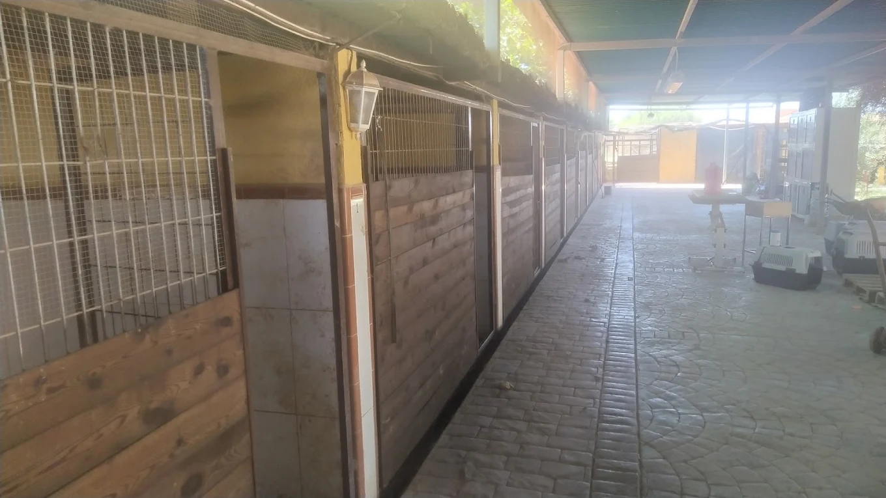
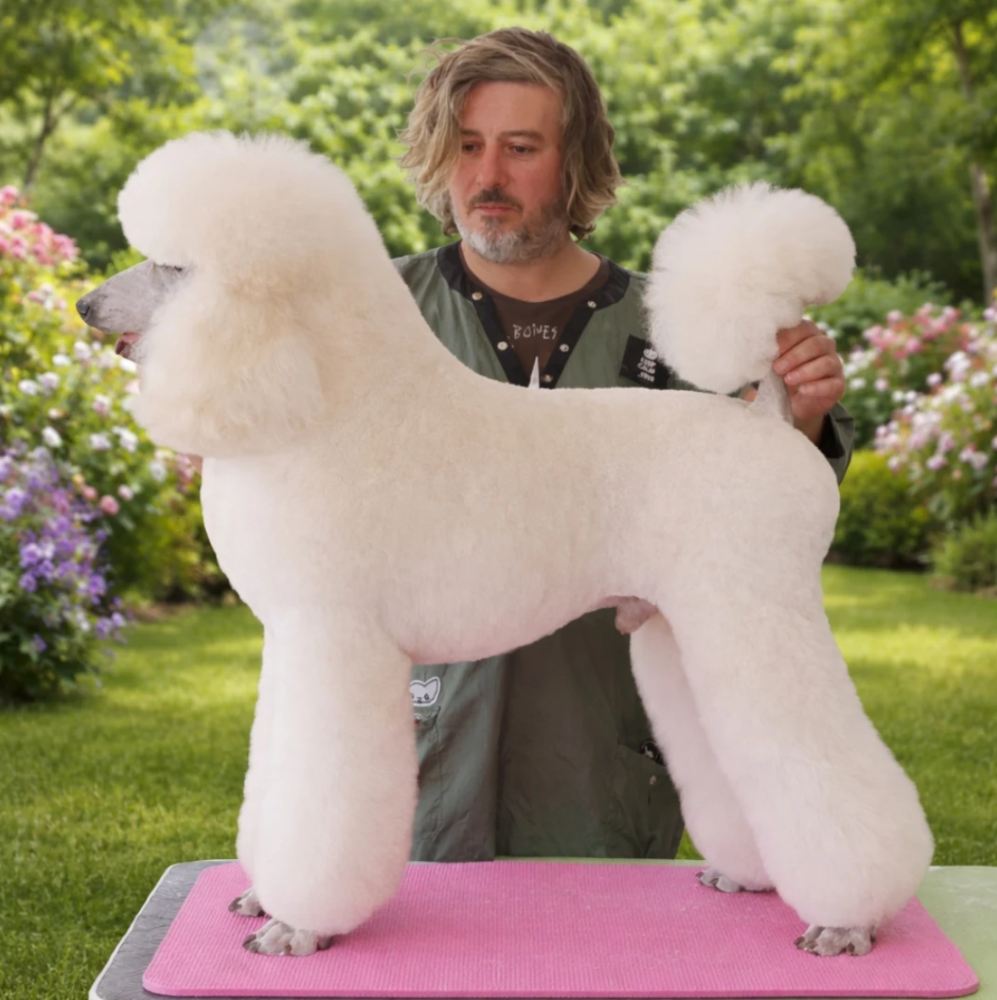
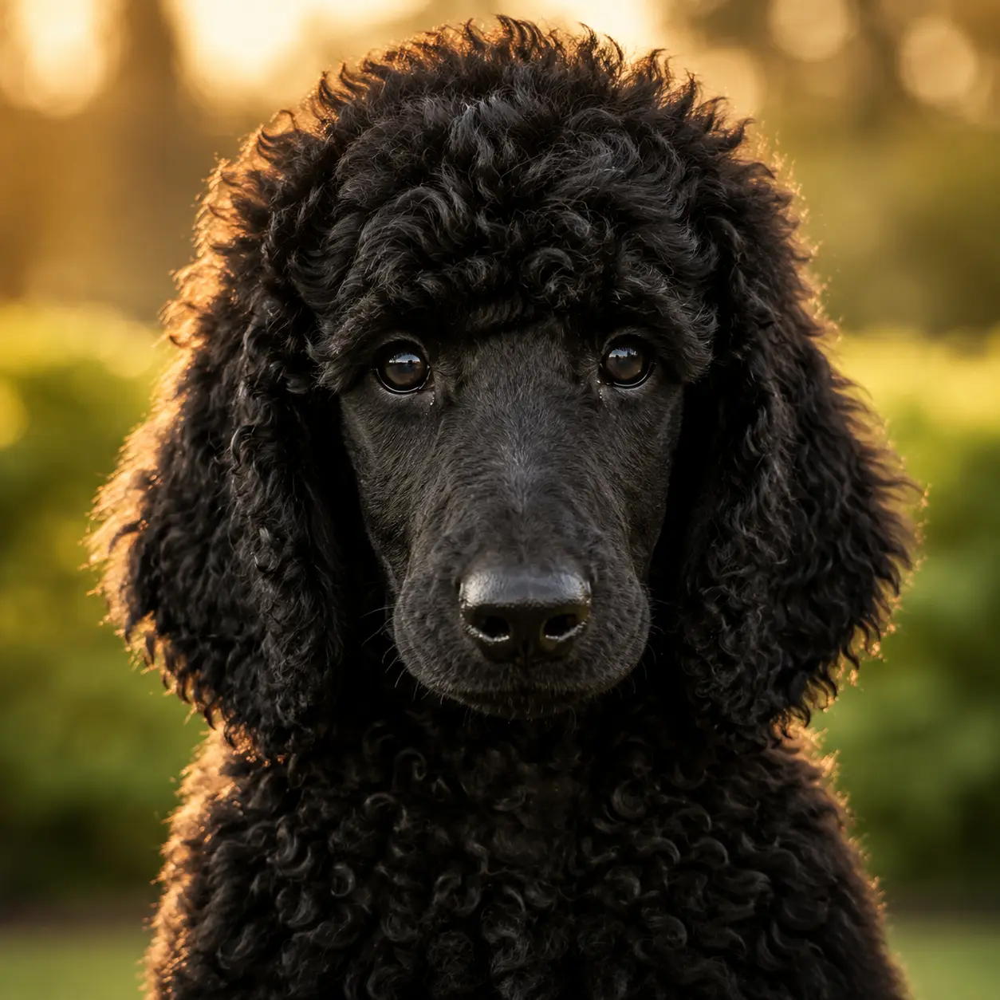

45 años cuidando, adiestrando y mimando a los perros de Lorca. Adiestramiento, residencia, cría selectiva y peluquería con Juan Miguel, en instalaciones únicas.
5,0★
Valoración Google
16
Reseñas verificadas
2008
Año de apertura
6
Servicios · todo en uno
Todo lo que tu perro necesita en un mismo lugar. Adiestramiento, cuidado, cría selectiva y bienestar en Lorca.

De la obediencia a la modificación de conducta. El 100% de los casos resueltos, con un método propio que no encontrarás en otro centro.
Ver servicio arrow_forward
Tu perro en las mejores manos cuando tú no puedes estar. Más de 100 plazas, pero solo 10-15 a la vez. Donde los perros no quieren irse.
Ver servicio arrow_forward
Trabajo artesanal a tijera y stripping. Máximo dos perros al día. Peluquero 3º en el Campeonato de Europa, especialista en caniche gigante.
Ver servicio arrow_forward
Línea de trabajo, no de belleza. Genética seleccionada y protocolo sanitario completo: si no está sano, no te lo llevas. Envíos a toda España.
Ver servicio arrow_forward
Criador especializado, referente en Murcia y Levante. Salud certificada y peluquería de competición en casa. Envíos a toda España.
Ver servicio arrow_forwardConsulta de conducta por videollamada desde cualquier punto de España. Un diagnóstico real de tu caso, no un curso enlatado.
Ver servicio arrow_forwardMás de 15 años cuidando perros en Lorca. Los resultados hablan por sí solos.
Los clientes lo repiten siempre: "profesionales y ante todo buenas personas". Juan Miguel y su equipo combinan técnica y vocación en cada servicio.
Instalaciones únicas e idóneas para los perros, con zonas de césped y espacios amplios. Los perros se tiran del coche en cuanto llegan a la puerta.
Adiestramiento, residencia y peluquería bajo el mismo techo. Sin desplazarte a varios sitios, con la confianza de un equipo que ya conoce a tu perro.
Más de 45 años de experiencia y familias que llevan años siendo clientes. La confianza no se improvisa: se construye sesión a sesión.
Cada perro es diferente. Juan Miguel diseña el plan de trabajo según las necesidades de cada animal, sea un cachorro o un perro con problemas de conducta.
Nota perfecta en Google con 16 reseñas todas a 5 estrellas. Una trayectoria de más de 15 años que respalda cada servicio.
16 reseñas reales en Google Maps · 5,0 ★ de media
"Muy amables y cercanos, unas instalaciones muy buenas. Llevo allí a mi doberman desde que tenía 5 meses, ahora tiene 11 y estoy muy contento. Juan Miguel es un gran adiestrador."
Jorge Hernandez
Google Maps
"Llevo solo 2 clases con mi pastor belga Malinois y muy contento desde el primer momento. Personal muy agradable y cercano, instalaciones perfectas. Juan Miguel es un profesional."
Jose Antonio Hernandez
Google Maps
"El sitio perfecto para mi beagle. Mi bigotitos se tira del coche en cuanto llegamos a la puerta. Hace dos años que llevo mi beagle, tanto de alojamiento como de peluquería, y para mí genial."
Vicente Miguel Ros
Google Maps · Local Guide
"Profesionales y ante todo buenas personas. Instalaciones únicas idóneas para los perros. Calidad en el servicio y pasión por lo que hacen. Solo puedo decir todo 10."
Francisco Alcaraz
Google Maps
"Me gusta mucho el centro. Trataron muy bien a mi perrita, además el paso por la peluquería súper bien. Me la dejaron súper limpia."
Sarai Ayllon Abellan
Google Maps · Local Guide
"Muy amables y cercanos, unas instalaciones muy buenas. Llevo allí a mi doberman desde que tenía 5 meses, ahora tiene 11 y estoy muy contento. Juan Miguel es un gran adiestrador."
Jorge Hernandez
Google Maps
"Llevo solo 2 clases con mi pastor belga Malinois y muy contento desde el primer momento. Personal muy agradable y cercano, instalaciones perfectas. Juan Miguel es un profesional."
Jose Antonio Hernandez
Google Maps
"Profesionales y ante todo buenas personas. Instalaciones únicas idóneas para los perros. Calidad en el servicio y pasión por lo que hacen. Solo puedo decir todo 10."
Francisco Alcaraz
Google Maps
"Me gusta mucho el centro. Trataron muy bien a mi perrita, además el paso por la peluquería súper bien. Me la dejaron súper limpia."
Sarai Ayllon Abellan
Google Maps · Local Guide
Todo lo que la gente nos pregunta antes de venir al Centro Canino de Lorca.
Llámanos o escríbenos. Estamos en Lorca, Murcia, y respondemos rápido.
Teléfono
670 36 06 76
670 36 06 76
Centro Canino Lorca
Dirección
Cam. de los Valencianos, 24
30813 Lorca, Murcia
Horario
Lun-Vie: 9:30-14:00 y 16:30-20:30
Sábado: 9:30-14:00 · Domingo: cerrado